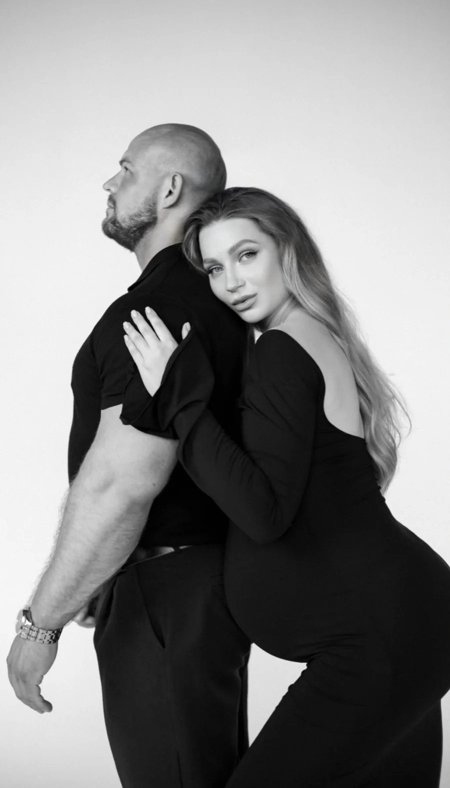
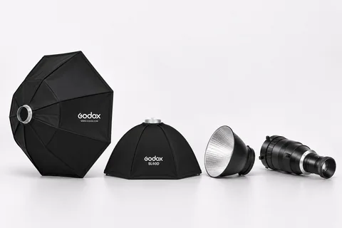

Локация 01 / 03
Циклорама
36 м² для ваших идей
Просторная белая циклорама для минималистичных портретов, семейных кадров и креативных fashion-съёмок. Также в студии есть цветные бумажные фоны для экспериментов с цветом.
Фотостудия в Нововоронеже
Свет. Пространство. Время для себя.
Всё, чтобы увидеть себя по-новому.

Один зал. Все локации. Ваша история.
Это White Studio
White Studio — стильное и уютное пространство, где каждая деталь вдохновляет на творчество. У нас один зал, в котором собраны все локации: можно менять фон, свет и настроение и воплощать разные идеи за одну съёмку.
Мы создали атмосферу, в которой легко расслабиться, наслаждаться процессом и создавать красивые кадры без спешки и суеты.
Наши локации и оборудование
Все локации находятся в одном зале. Просторная циклорама, эстетичная зона с ёлкой и панорамными окнами, уютный детский уголок — меняйте настроение и воплощайте разные идеи за одну съёмку.
Работаем со светом

В студии есть всё необходимое для качественной съёмки: два мощных источника постоянного света, софтбоксы и рефлекторы. Оборудование позволяет создавать мягкое освещение, управлять тенями и воплощать разные световые схемы — от минималистичных портретов до креативных fashion-съёмок.
Для творческих экспериментов доступно дополнительное оборудование в аренду: насадка ГОБО, цветные фильтры и другие инструменты для необычных световых эффектов.
За пределами съёмки
White Studio — место, где рождаются новые идеи и яркие впечатления. Стильные девичники, гендер-пати, творческие мастер-классы и нестандартные проекты — мы воплощаем самые разные форматы.
Постоянно экспериментируем, вдохновляем и создаём события, которых ещё не было в нашем городе.

Подарочный сертификат
Подарочный сертификат White Studio — возможность подарить не просто фотосессию, а вдохновение, красивые моменты и воспоминания, которые останутся надолго.
Идеальный подарок для тех, кто ценит эстетику и особенные впечатления.
Перед встречей
Позвоните нам по номеру +7 920 414-65-52. Обсудим формат, свободное время, стоимость и детали вашей съёмки или события.
Да. Все три локации находятся в одном зале: циклорама 36 м², новогодняя зона у панорамных окон и детская зона. Также доступны цветные бумажные фоны. За одну съёмку можно менять локации и создавать кадры с разным настроением.
Два источника постоянного света, софтбоксы и рефлекторы. Для дополнительных эффектов можно арендовать насадку ГОБО и цветные фильтры.
Да. Мы проводим девичники, гендер-пати, творческие мастер-классы и обсуждаем индивидуальные форматы. Свяжитесь с нами, чтобы согласовать программу и условия.
Увидимся в студии
Расскажите, что вы задумали.
Всё остальное обсудим вместе.